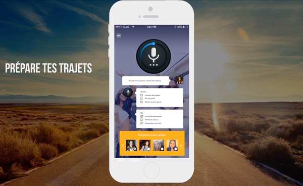
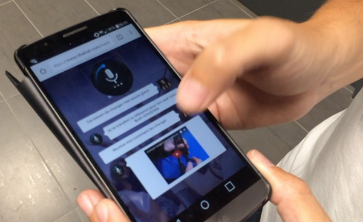

Menu
Matmut voice

I participated in the hackathon organized by Matmut on June 25 and 26, 2016
What is a hackathon ?
Contraction of "hack" and "marathon", the hackathon is an event where several teams meet to develop a digital project (application, website, software ...) in a very limited period (a day, a night or a week -end). A jury made up of business and digital experts chooses and rewards the winners.
With a team composed on site, our mission was to answer in 24h to the following issue : "How the Matmut can she become a digital reference for young drivers ?"
For further informations about the event : https://www.matmut.fr/hackathon/index.html
From a common reflection, we worked on a mobile application by integrating a voice assistant "Matmut Voice" which safely accompanies young drivers.
Users can ask the chatbot about various information on their vehicle (example: how to change a tire ? How to maintain my car ?) and assist users in the event of a disaster (call a tow truck, a repairer ...).
I mainly worked on the interface design of the application (screens, icons and logo).

The jury (including the main director of Matmut) gave us the second price